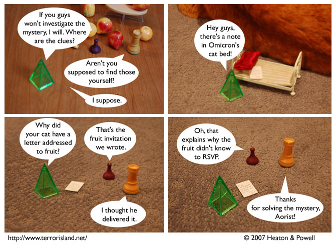

Strip #97
— Wednesday, January 24, 2007
Omicron’s Bed != mailbox
Notes, Thoughts, &c.
Ben’s Notes
I heard that Cory Doctorow is having a book signing in San Francisco a couple weeks from now. Any fans from around there want to show up with me and hijack the event into being TerIslaCon 1? Doctorow’s a known Terror Island fan himself, so he probably won’t mind.
Lewis’s Notes
ring ring
Hello?
Hi, yeah, it’s Lewis, I am conveying my comments
telephonically.
How lackluster.